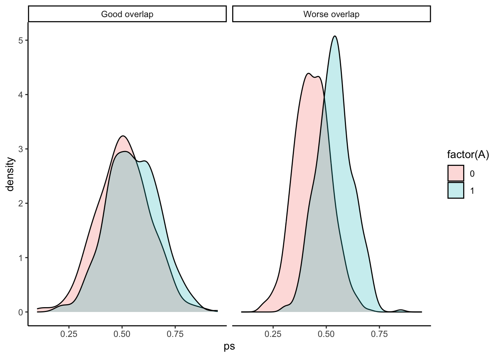

You can download a template file for this activity here.
Discussion
One way to block association flows along noncausal paths in a causal graph is to perform matching.
Matching restricts variation by eliminating or reducing as much as possible differences between treatment groups.
Last time, we saw how these differences can be eliminated completely with exact matching and nearly eliminated with coarsened exact matching.
Exact matching: treatment groups will have identical distributions of covariates by definition of an exact match
Coarsened exact matching: treatment groups will have identical distributions of coarsened covariates (e.g., exact match on age category rather than age, income category rather than income)
In other words, these two methods ensure (almost) perfect balance between treatment groups.
For this reason, exact matching and coarsened exact matching should be used when possible.
But we saw a downside with these two methods: matched sample size.
The more variables we need to to match on, the harder it is to find an exact match (or even a coarsened one) in our dataset.
Alternative ways to match involve distance measures that summarizes all of the covariates instead of trying to deal with each one individually. Examples include:
Euclidean distance: distance between units \(i\) and \(j\) is
\(d_{ij} = \sqrt{(x_i - x_j)(x_i - x_j)'}\)
\(x_i\) is a vector of \(p\) covariates: \(x_i = (x_{i1}, x_{i2}, \ldots, x_{ip})\)
Because different covariates are measured on different scales, a better alternative is the scaled Euclidean distance which resscales each covariate by dividing by a pooled estimate of the standard deviation across all treatment groups.
For details, see the documentation ?MatchIt::distance.
\(\Sigma\) is the covariance matrix of the covariates pooled across treatment groups.
This ensures the variables are on the same scale and accounts for the correlation between covariates. (e.g., If the cases are far apart for two covariates that are correlated, the distance is not fully “double counted”.)
For details, see the documentation ?MatchIt::distance.
The propensity score\(e_i\) for unit \(i\) is the conditional probability that the unit was treated given covariates:
Often estimated with logistic regression or flexible predictive models like trees
Propensity score distance:
\(d_{ij} = | e_i - e_j |\)
Digging deeper: A note about propensity score methods
Propensity score methods are quite popular because of a nice property.
To explain that nice property, I need to make explicit an idea that has come up in some of my pre-class videos but that we haven’t talked about explicitly: conditional exchangeability.
Conditional exchangeability is an assumption that there is a set of covariates \(Z\) such that the potential outcomes are independent of treatment given \(Z\). In notation:
\[
Y^a \perp\!\!\!\perp A \mid Z \qquad \text{for} \quad a = 0,1
\]
It is an identification assumption: assuming that conditional exchangeability holds allows us to identify the causal effect of treatment.
It essentially says that if \(Z\) blocks all noncausal paths, then we can make fair comparisons of observed outcomes between the treatment groups within subsets of the data formed from conditioning on \(Z\).
The nice property of the propensity score is that if conditional exchangeability given \(Z\) holds, it also holds given the propensity score. That is, if
\[
Y^a \perp\!\!\!\perp A \mid Z \qquad \text{for} \quad a = 0,1
\]
then
\[
Y^a \perp\!\!\!\perp A \mid e(Z) \qquad \text{for} \quad a = 0,1
\]
where \(e(Z)\) is the propensity score as a function of the variables in \(Z\).
This property means that fair comparisons of the observed outcomes between treatment groups can be done within strata defined by the propensity score rather than the (possibly large) set of original covariates \(Z\). (It’s easier to work with a single number summary measure—the propensity score—rather than lots of variables.)
Performing matching
k:1 nearest neighbor matching
If estimating the ATT, for each treated unit, find the k controls with the smallest distance from this treated unit.
Can specify a caliper parameter: a distance such that units can only matched if they are less than or equal to this distance.
The number of neighbors k must be chosen by the analyst and has a bias-variance tradeoff associated with it.
Higher k reduces variance because there is less uncertainty in finding the best few matches than finding the single best match. However it increase biases because a unit is matched with other units that are successively worse matches.
Note: King and Nielsen, 2019 show that nearest neighbor matching using propensity score distance is not ideal because it can exacerbate imbalance by not matching the covariates themselves.
e.g., Two units could have identical propensity scores but different values for their covariates.
Subclassification
Form groups (subclasses) of units that are close together.
While it is possible to perform subclassification using non-propensity score distance measures, it is traditionally done with the propensity score because just the propensity score can be used directly by creating bins: e.g., 0 - 0.2, 0.2 - 0.4, 0.4 - 0.6, 0.6 - 0.8, 0.8 - 1
The number of subclasses must be chosen by the analyst and has a bias-variance tradeoff associated with it.
More subclasses reduces bias because units in each subgroup are more similar to each other but increases variance because there are fewer units in each subgroup.
10 subclasses is generally a good place to start.
Full matching
A more complex form of subclassification in which the number of subclasses is chosen automatically.
Creates a collection of matched sets, where each matched set contains at least one treated individual and at least one control individual (possibly many from either group).
Minimizes the average of the distances between each treated individual and each control individual within each matched set.
This process can be computationally intensive.
Weighting
Propensity scores (but not the other distance measures) can be used directly as weights in weighting methods.
Assessing common support
When using propensity scores in any of the above matching methods, it is important to check for common support.
By matching treated and control units with similar propensity scores, we are implicitly assuming that the distribution of propensity scores, but this may not be the case:
library(tidyverse)library(scales)set.seed(451)sim_ps_data <-bind_rows(tibble(A =rep(c(0,1), each =500),ps =c(rescale(rnorm(500), to =c(0.1, 0.9)), rescale(rnorm(500), to =c(0.2, 0.95))),overlap ="Good overlap" ),tibble(A =rep(c(0,1), each =500),ps =c(rescale(rnorm(500), to =c(0.2, 0.7)), rescale(rnorm(500), to =c(0.3, 0.85))),overlap ="Worse overlap" ))ggplot(sim_ps_data, aes(x = ps, fill =factor(A))) +geom_density(alpha =0.25) +facet_grid(~overlap) +theme_classic()

In the “Worse overlap” panel, the region of common support is where both densities are above 0: approximately 0.3 - 0.7.
Above 0.7, there are no control units that are good matches for the treated units.
Below 0.3, there are no treated units that are good matches for the control units.
Exercises
We will continue looking at the data from the National Supported Work Demonstration project. What was the effect of this job training program on income following the program?
Treatment/exposure: treat (Individual was assigned to the job training program, 1 = yes, 0 = no)
Outcome: re78 (Individual’s income in 1978, in US dollars)
Confounders:
age: age in years
educ: education in number of years of schooling
race: the individual’s race/ethnicity, (Black, Hispanic, or White)
married: an indicator for marital status (1 = married, 0 = not married)
nodegree: an indicator for whether the individual has a high school degree (1 = no degree, 0 = degree)
re74: income in 1974, in US dollars
re75: income in 1975, in US dollars
Nearest neighbor matching
Exercise: Implement 2-nearest neighbor matching to estimate the ATT for the lalonde data. Use Mahalanobis distance.
You’ll need to look at the matchit() function documentation. On this page look at the documentation for the distance argument and then click the link to the distance function documentation.
Exercise: The following code implements subclassification on the propensity score with 10 subclasses to estimate the ATT. The propensity score is estimated with a generalized linear model (logistic regression). Check the documentation to verify how the choices for the arguments below were chosen.
# Subclassification on the propensity score for the ATTmatch_out_subclass <-matchit( treat ~ age + educ + race + married + nodegree + re74 + re75,data = lalonde,method ="subclass",subclass =10,distance ="glm",estimand ="ATT")
Exercise: Evaluate the quality of the matching by inspecting the balance statistics. (Looking at matched sample sizes isn’t relevant here because subclassification doesn’t discard units at the matching step.)
# Compute balance statistics overall across all subclassesmatch_out_subclass_summ <-summary(match_out_subclass, interactions =TRUE)
plot(match_out_subclass_summ)
Exercise: Assess common support by comparing the distribution of propensity scores across treatment groups. Does it look like we need to filter out some cases? If so, create a new filtered dataset only keeping cases in the common support region.
# Appends a column called "ps" containing the propensity scores to the original datalalonde_with_ps <- lalonde %>%mutate(ps = match_out_subclass$distance)# Plot
Time to estimate the treatment effect!
In general, we start by fitting a model of the outcome Y as a function of treatment, covariates, and treatment-covariate interactions. This is demonstrated by the model below with 5 covariates X1-X5. The * creates the interaction terms, and the fact that X1 + X2 + X3 + X4 + X5 is in parentheses creates interactions between A and each of X1-X5.
# Linear model with covariates and treatment-covariate interactionsmod <-lm(Y ~ A * (X1 + X2 + X3 + X4 + X5), data = our_matched_data, weights = weights)
The code below applies the general setting above to our context:
The weights = weights part is supplying weights to the model fit (weighted least squares instead of ordinary least squares).
There is a weights column in our matched data containing weights resulting from matching.
Then we use avg_comparisons() from the marginaleffects package to use information from this model to estimate the ATT. While we can pull up the documentation page with ?avg_comparisons, it is dense to navigate. Here is the essential information for the arguments we use (more information in this MatchIt vignette):
model: The model we fit above
variables: We want to make comparisons of the outcome across these variables. Here, the treatment variable
vcov: “HC3” indicates that we are using heteroskedasticity-robust standard errors which are a valid way to estimate standard errors with weighted least squares
Note the before we used cluster-robust standard errors. Cluster-robust SEs are preferred when there are a lot of clusters (i.e., a lot of subclasses), but with subclassification, there are few (10 for us).
newdata: The function uses the data here to predict the values of the outcome for the supplied units under treatment and control. Comparing the average values of these predictions estimates the treatment effect. Here, we filter to just the treated individuals so that the comparison estimates the ATT specifically.
If we performed our matching to estimate the ATE, we would not filter our data.
If we performed our matching to estimate the ATC (ATU), we would filter to control (untreated) units.
Exercise: Summarize what you learn about the ATT from this output.
Full matching
Exercise: Implement full matching to estimate the ATT using logistic regression to estimate the propensity score. (Review how full matching differs from subclassification.)
match_out_full <-matchit( ___)
Exercise: Evaluate the quality of the matching by inspecting the balance statistics.
Assessing common support: The same common support plot from the subclassification section will apply here. There looks to be good overlap, so no filtering is needed.
Exercise: Estimate the ATT from full matching, and interpret your results.